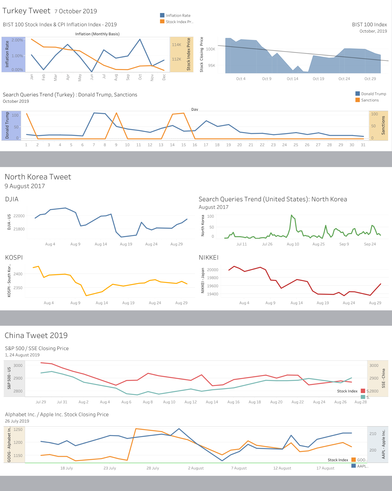
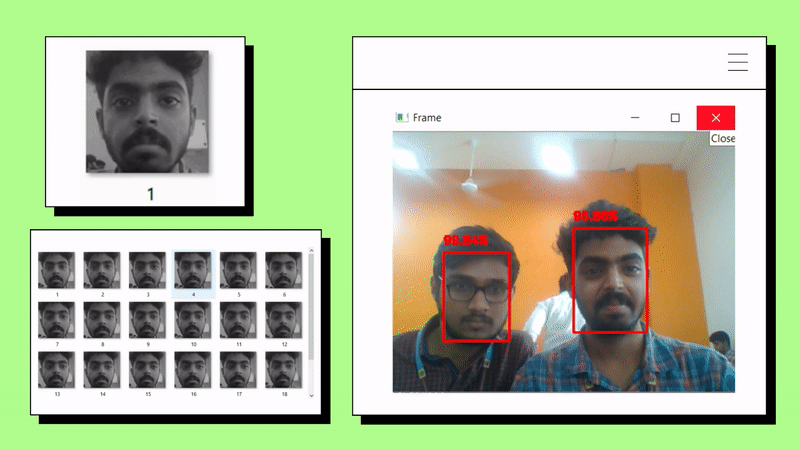

EnDe-K
GitHub : github.com/UjwalKandi/EnDek
- Python code for implementing Encrypting File System (EFS) using Modular Key framework.
ujwalkandi.in
(the website you are currenly on)
- Uses JAM Stack - Javascript APIs Markup.
- Uses Hugo(theme PaperMod ) to render Markdown pages.
- Vercel ’s Serverless for APIs and loading badges with image-proxy.
- For analytics I use Panelbear.com .
Dashboard on Drug Cartels' Activity across Mexico
Tableau : public.tableau.com/ujwal.kandi/DrugCartels-Mexico
- Extracted data of 10 drug cartel's drug traffic activity spanning over
20years. - Analyzed shifts in their territory and impact over each state from 1989 to 2010.
Financial Impact of Presidential Tweets on Stock Markets
Tableau : https://public.tableau.com/ujwal.kandi
Correlation Viz

- Scrapped vital tweets of world leaders from a Tweet Archive and analyzed their financial impact on global stock markets.
- Applied several Data Visualization techniques to indicate the correlation between the two factors.
Archaeological Sites with Mayan Inscriptions
Tableau : public.tableau.com/ujwal.kandi/MayanSites
- Visualized a dataset of
334newly discovered sites across Mesoamerica that expands the known territory of the Mayan civilization. - Mapped lat-long coordinates to sites that lacked GPS values through geocoding.
Real-Time Face Recognition with Raspberry Pi 3
GitHub : github.com/UjwalKandi/Object-Recognition-with-Raspberry-Pi

- Developed model using OpenCV, Numpy, Dlib and implemented with Raspberry Pi 3.
- Provides real-time confidence score of the faces recognized.
Deaths during the LA Riots of 1992
Tableau : public.tableau.com/ujwal.kandi/LAriots1992
- Acquired statistical data on homicides & other riot-related deaths from the official investigation records of
LAPD,LASD, andLA Times. - Also gathered data from the building records of
LADBSon property that were destroyed by arson during the riots.
the Note Making Project 📝
GitHub : github.com/UjwalKandi/the-Note-Making-Project
- Implemented Optical Character Recognition using MATLAB as part of the Note Making Project.